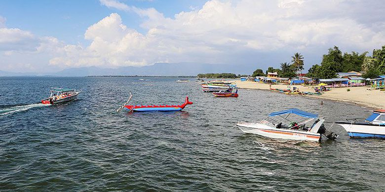
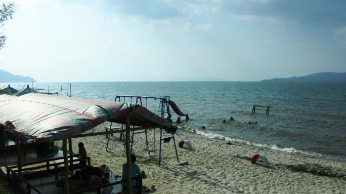
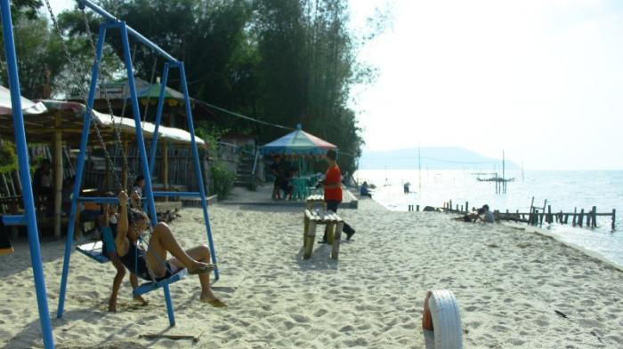

Balige Menangkap Potensi Wisata
Sumber: https://travel.kompas.com/read/2017/06/13/061400427/balige.menangkap.potensi.wisata

Wisatawan menikmati Danau Toba di Pantai Pasir Putih Lumban Bulbul, Kecamatan Balige, Kabupaten Toba
BALIGE, KOMPAS.com - Tiga tahun lalu,
Pantai Lumban Bulbul di tepi Danau Toba,
tepatnya di Balige, ibu kota Kabupaten Toba Samosir,
Sumatera Utara, dipenuhi semak rumput dan bambu. Warga yang
menggantungkan hidup pada pertanian dan perikanan terperangkap jerat
kemiskinan.
Kini, semak belukar disulap menjadi pasir putih. Kapal-kapal wisata
berseliweran di danau, rumah makan, dan pondok berjejer di tepi danau. Rumah warga berubah jadi rumah tinggal
sewa.
Pantai Lumban Bulbul adalah salah satu destinasi favorit di Balige. Destinasi itu berkembang setelah
Danau Toba ditetapkan menjadi satu dari 10 destinasi unggulan nasional. Penetapan itu membuka akses langsung
ke Danau Toba lewat penerbangan langsung Jakarta-Silangit. Wisatawan dari Jakarta hanya butuh dua jam ke kawasan
Danau Toba.
Keliling Sekitar Pantai Lumban Bulbul Naik Sampan
Sumber : http://medan.tribunnews.com/2016/04/18/keliling-sekitar-pantai-lumban-bulbul-naik-sampan

Wisatawan menikmati suasana Pantai Lumban Bulbul di Balige.
TRIBUN-MEDAN.com, BALIGE - Objek wisata Pantai Lumban Bulbul di Desa Bulbul, Balige, Toba Samosir, yang mengandalkan keindahan pantai Danau Toba secara bertahap dibenahi. Kunjungan wisatawan lokal dan domestik terus meningkat ke pantai tersebut.
Pantai pasir putih yang landai menjadi hal yang langka ditemui di sepanjang tepian pantai Danau Toba, serta keindahan pemandangan panorama bukit, awan biru di atas Danau Toba, menjadi daya tarik tersendiri bagi pengunjung Pantai Bulbul.
"Pemerintah Kabupaten Toba Samosir berupaya memoles kawasan Pantai Lumban Bulbul dengan membangun beberapa fasilitas pendukung, yakni lahan parkir, taman bermain, jalan setapak, gallery shop, kamar mandi, dan panggung terbuka," kata Simangunsong, penduduk sekitar yang juga menyewakan tikar dan ban.
2 Pantai Pasir Danau Toba Ini Difasilitasi Permainan Anak
Sumber : http://medan.tribunnews.com/2018/04/05/2-pantai-pasir-danau-toba-ini-difasilitasi-permainan-anak.

Ada spot bermain anak-anak yang lengkap dengan ayunan di pinggir pantai dan plosotan
TRIBUN-MEDAN.COM- Objek wisata Pantai Lumban Bulbul yang berada di Desa Bulbul, Balige, Toba Samosir, Sumatera Utara mengandalkan keindahan pantai Danau Toba secara bertahap mulai dibenahi.
Kunjungan wisatawan lokal dan domestik terus meningkat ke pantai tersebut.
Pantai pasir putih yang landai menjadi hal yang langka ditemui di sepanjang tepian pantai Danau Toba, serta keindahan pemandangan panorama bukit, awan biru di atas Danau Toba, menjadi daya tarik tersendiri bagi pengunjung Pantai Bulbul.
Artikel ini telah tayang di tribun-medan.com dengan judul 2 Pantai Pasir Danau Toba Ini Difasilitasi Permainan Anak